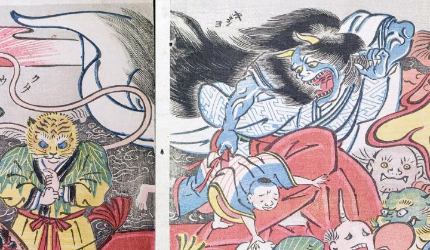

鬼女；キジョ，鬼；オニ，女；オンナ

髪の長い鬼が、人間の子どもの腰帯を掴み連れ去ろうとしているように見える。鬼の肌は青白いが筋骨たくましく、大きな2本の角が生えている。開いた口から覗く歯にはお歯黒が施してあり、この鬼は女であることがわかる。緋袴をはき羽織った衣がたなびいている。
著作者：玉園／出典：親書誌：U426_nichibunken_0145：画本西遊記百鬼夜行ノ圖；エホンサイユウキヒャッキヤギョウノズ／日付：2009／資源識別子：U426_nichibunken_0145_0023_0000
Copyright (c)2010- International Research Center for Japanese Studies, Kyoto, Japan. All rights reserved.